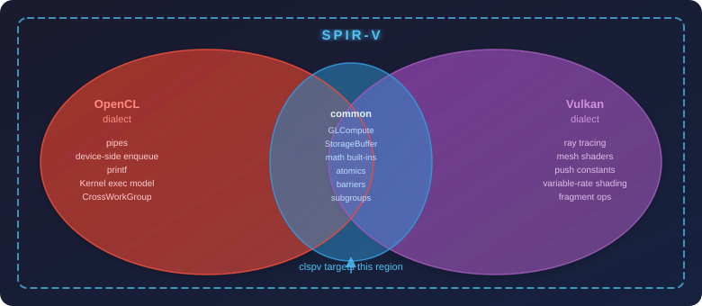

clspv for Production: OpenCL C as Vulkan SPIR-V
When you compile an OpenCL kernel with clspv for a Vulkan engine, you are not
wrapping OpenCL inside Vulkan or running a compatibility layer at runtime. You are
using SPIR-V as a shared intermediate language — the same binary format Vulkan
consumes for every shader — and clspv is the translator from OpenCL C into that
format.
This distinction matters because SPIR-V has two different dialects. The OpenCL ecosystem defines its own set of SPIR-V capabilities (execution models, storage classes, built-in variables, extended instructions) and so does Vulkan. They overlap in the middle, but neither side is a strict subset of the other.
Two Dialects of the Same Format

clspv targets the Vulkan dialect — it emits the GLCompute execution model
with StorageBuffer and Workgroup storage classes, not the OpenCL Kernel
execution model. The generated SPIR-V is valid Vulkan shader code, loadable by
vkCreateShaderModule like any compute shader you would write in GLSL or HLSL.
This is why the AOT path works at all: there is no special treatment at the Vulkan driver level. The driver sees an ordinary compute shader and has no idea it came from OpenCL C.
What Compiles Cleanly
The core of OpenCL C maps directly to Vulkan compute shaders:
-
Buffer arguments (
__globalpointers) →StorageBufferdescriptors. Argument n →set=0, binding=n. Predictable, deterministic, inspectable with--descriptormap. -
Shared memory (fixed-size
__local) →Workgroupstorage class arrays — the same memory your GLSLsharedvariables live in. -
NDRange built-ins (
get_global_id,get_local_id,get_group_id,get_global_size) →gl_GlobalInvocationID,gl_LocalInvocationID,gl_WorkGroupID, etc. -
Math built-ins (
sin,cos,sqrt,fma,clamp,mix,dot,cross,native_sqrt, …) →GLSL.std.450extended instructions. The mapping is nearly 1-to-1. -
Integer atomics on global buffers (
atomic_add,atomic_cmpxchg, etc.) →OpAtomicIAdd,OpAtomicCompareExchange. -
Barriers (
barrier(CLK_LOCAL_MEM_FENCE | CLK_GLOBAL_MEM_FENCE)) →OpControlBarrierwith the appropriate scopes. -
Subgroup operations (via
cl_khr_sub_groups) → the sameOpGroupNon- Uniform*instructions GLSL subgroup extensions emit.
What Does Not Survive the Translation
Some OpenCL C features are absent from the Vulkan SPIR-V dialect, or require Vulkan hardware features that are not universally available.
No printf
printf in a Vulkan compute shader has no standardized mechanism. clspv does
not support it. The idiomatic replacement is a debug-output storage buffer: write
diagnostic values into a __global uint* (or structured buffer) and read them back
on the host after the kernel finishes.
Limited double / float64
double and double-typed built-ins require the shaderFloat64 Vulkan device
feature, which is absent on many mobile and integrated GPUs. clspv disables
double support by default. Kernels that use double must
-
Pass
-DCMAKE_DOUBLE_SUPPORT=ON(or equivalent) toclspv, and -
Verify
VkPhysicalDeviceFeatures::shaderFloat64 == VK_TRUEat device selection.
For portability, write kernels in float and reserve double for desktop-only
deployments where you have verified the device feature.
Pipes and Device-side Enqueue
read_pipe, write_pipe, and enqueue_kernel are OpenCL 2.0 features with no
Vulkan equivalent. clspv targets OpenCL 1.2 semantics (-cl-std=CL1.2) and
does not compile these constructs.
Dynamic Loop Bounds from Buffers
This is one of the most important production gotchas when using the clspv AOT
path. `clspv’s structured-control-flow pass must be able to prove that every loop
terminates so it can produce valid structured SPIR-V. When a loop bound is loaded
from a storage buffer at runtime, the pass cannot make that proof, and the resulting
shader typically hangs the GPU.
This is a limitation of clspv specifically, not of the OpenCL specification.
A conformant native OpenCL driver (NVIDIA, AMD ROCm) compiles dynamic bounds
without complaint because it does not require structured control flow. The kernel
will work on those platforms and silently produce a GPU hang only via clspv AOT
compilation.
The rule for the clspv AOT path: loop bounds must be compile-time constants.
Use #define, constexpr, or SPIR-V specialisation constants — never a value read
from a descriptor.
|
This failure mode produces a silent GPU hang, not a compilation error or a
validation layer message. If a kernel that worked under a native OpenCL driver
hangs under the |
No Variable-Length Arrays
Variable-length arrays are not supported in OpenCL C — this is a spec restriction, not a clspv limitation. __local array sizes must be fixed at compile time. In practice this means using a #define or a specialisation constant for any local array dimension that you might otherwise want to pass as a kernel argument.
Vulkan-Only Capabilities You Cannot Reach from OpenCL C
The right side of the Venn diagram — ray tracing, mesh shaders, variable-rate shading, cooperative matrices, fragment operations — is not accessible from OpenCL C at all. Kernels that need those capabilities must be written in GLSL/HLSL/SLANG and compiled with a Vulkan-aware compiler. The clspv AOT path is the right choice for compute-only workloads; it is not a path to the full Vulkan shader ecosystem.
Argument Mapping in Production
The deterministic descriptor layout is clspv’s most useful production property:
every `__global buffer argument n maps to a storage buffer at set=0, binding=n,
and scalar (POD) arguments are grouped into a uniform buffer at a predictable
binding. Never rely on this from memory — always generate and commit the map:
clspv -cl-std=CL1.2 --inline-entry-points \
--descriptormap=forest.map \
forest.cl -o forest.spvThe .map file is the authoritative specification of your kernel’s interface.
Check it into version control alongside the .cl source and treat divergence
between the map and your VkDescriptorSetLayout as a build error.
POD Arguments and Push Constants
By default clspv puts scalar arguments (e.g. float scale, int steps) into a
uniform buffer. If you prefer push constants — lower latency, no descriptor
update — pass --pod-pushconstant:
clspv --pod-pushconstant -cl-std=CL1.2 --descriptormap=kernel.map kernel.cl -o kernel.spvThe .map file will show pushconstant offsets instead of bindings, and your
VkPipelineLayout must declare a matching VkPushConstantRange. Either approach
is correct; pick one and commit the map so the host code can follow it.
Specialization Constants
When you need a value that is fixed per-dispatch but should remain changeable
without recompilation (work-group tile size, algorithm variant, feature toggle),
clspv supports SPIR-V specialization constants via a clspv_builtin attribute.
This is preferable to #define for values the engine varies at runtime, and
avoids the dynamic-bound problem because the value is still a compile-time
constant from the shader’s perspective:
int __attribute__((annotate("clspv,spec_constant,0,0"))) kMaxSteps;The two integers after spec_constant are the descriptor set and binding of the
spec constant in the generated SPIR-V. Set the value via
VkSpecializationInfo at pipeline creation time, with no shader recompilation.
Required Vulkan Device Features
clspv-generated SPIR-V uses pointer arithmetic internally, which requires two
Vulkan 1.1 features that are not enabled by default:
vk::PhysicalDeviceVulkan11Features vk11{
.variablePointersStorageBuffer = true,
.variablePointers = true};Add this to your device-feature chain. Validation will catch a missing feature
immediately; the chapter’s compute_common.h enables both for all samples.
A Production Checklist
Before shipping a kernel through the clspv AOT path:
-
All loop bounds are compile-time constants (
#define, specialisation const). -
No
printf— replaced with a debug output buffer. -
doubleusage audited;shaderFloat64verified if present. -
--descriptormapgenerated and committed; host layout matches exactly. -
variablePointers+variablePointersStorageBufferin device feature chain. -
Entry point name in
VkPipelineShaderStageCreateInfo::pNamematches the OpenCL kernel name, not"main". -
Work-group size fixed via
reqd_work_group_sizeand matched in the dispatch round-up on the host. -
SPIR-V validated with
spirv-val forest.spvin CI.